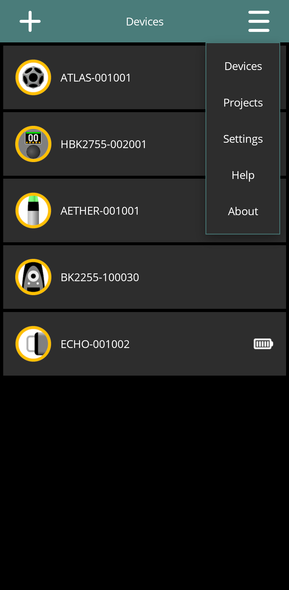

DIRAC Field
Draft for review: These DIRAC Field instructions and illustrations are being reviewed.
On this page
DIRAC Field controls supported acoustic measurement equipment over a local network, organises recordings into projects and groups, and provides signal inspection, acoustic analysis and export to desktop DIRAC.
What each device does
The table describes the functions available through DIRAC Field. A device's own local functions may differ.
| Device and guide | Role in DIRAC Field |
|---|---|
| Aether | Live sound level measurement (SLM), microphone calibration and recording. |
| Echo | Signal playback; source control for measurements with receivers. |
| Atlas | Signal playback with adjustable gain; source control for measurements with receivers. |
| HBK 2755 | White noise, pink noise and user-signal playback; source control for measurements with receivers. |
| HBK 2255 | Recording and input-level indication. The app does not provide Aether's selectable SLM mode for this device. |
Aether is the only device with the SLM workflow described in this manual. An Echo, Atlas or HBK 2755 produces sound; an Aether or HBK 2255 captures it. Opening a source's control page does not turn that source into a recorder.
Finding your way around the app
After startup, the Devices page lists discovered equipment. Tap a device card to open its control page. The menu in the top app bar provides Devices, Projects, Settings, Help and About.
Settings and Help follow the current context. On a device control page they refer to that device. From a general page, such as Devices, they open application settings and general help. Use the back arrow to return from a subordinate page.


The illustrations show the Android app. Select a screenshot or its Full size link to open the original image. System dialogs can look different on another platform.
Chapters
- Quick Start — make a first recording and inspect it.
- Connecting Devices — networks, discovery, passwords and reconnection.
- Projects and Measurement Groups — destinations, metadata and organisation.
- Acoustic Measurement Workflow — combine a source and receivers.
- Device Controls — choose the guide for Aether, Echo/Atlas, HBK 2755 or HBK 2255.
- Results and Analysis — signals, graphs, acoustic parameters and display options.
- Export and Desktop DIRAC — DIRAC packages, WAV, CSV and TXT.
- Device Settings and Maintenance — common settings and device differences.
- Application Settings — naming, stored passwords and forgotten devices.
- Troubleshooting — connection, capture, analysis and export problems.
- Version and Release Information — identify the installed software and its compatibility.
Find a particular task
- Measure a sound level with Aether.
- Calibrate the Aether microphone from the app.
- Configure Echo or Atlas playback, or use HBK 2755 signal controls.
- Record with Aether, or record with HBK 2255.
App instructions and hardware instructions
This manual explains the pages and actions in DIRAC Field. Physical connections, local buttons, indicators, power limits and physical recovery sequences belong in the Aether, Echo and Atlas hardware guides, or the manufacturer's HBK documentation. Links in the device chapters take you to the relevant hardware information.
The desktop DIRAC guide covers the desktop application. Aether can also be used by desktop DIRAC for recording, but its SLM workflow described here is a DIRAC Field function.